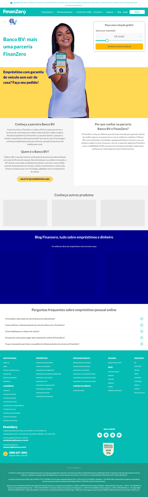

C3856b56773 — finanzero.com.br
https://finanzero.com.br/parceiros-banco-bv/
Prioridade: MEDIUM · Cenário: B_AMBIGUOUS_COMMUNICATION · Revisão humana: PENDING
1. Decisão Consolidada
Justificativa
Trata-se de landing page específica para o Banco BV operada pelo correspondente bancário/buscador de crédito FinanZero (CNPJ 23.722.194/0001-34). Embora a empresa se identifique no rodapé e declare sua condição de correspondente bancário citando a Resolução CMN nº 4.935/2021 e o Banco Votorantim S.A. (CNPJ 59.588.111/0001-03), a página utiliza 'BV Financeira' no início do título HTML, exibe o logotipo oficial 'BV banco' em destaque acima da dobra ao lado de simulador de empréstimo (sem aviso visível de correspondente na área inicial) e não informa os números de SAC/Ouvidoria do Banco BV no rodapé. Recomenda-se revisão humana para verificação contratual e adequação às regras de uso de marca e transparência da Resolução CMN nº 4.935/2021. [Revisor: CONFIRM] Confirma-se a classificação REVIEW_REQUIRED (prioridade MEDIUM). Trata-se de landing page comercial de correspondente bancário/promotora de crédito (FinanZero Brasil Serviços Online Ltda., CNPJ 23.722.194/0001-34) voltada à captação de empréstimo com garantia de veículo utilizando o logotipo do Banco BV em destaque na dobra inicial (E-SHOT-VIEWPORT) e 'BV Financeira' no início do título (E-TITLE). Apesar de apresentar declaração de correspondente bancário no rodapé citando a Resolução CMN nº 4.935/2021 e o CNPJ do Banco Votorantim S.A. (E-TXT-015, E-TXT-018), o aviso está confinado a uma caixa de rolagem no fim da página (E-SHOT-FULL), ausente na área visível inicial do simulador, e não apresenta os canais de SAC e Ouvidoria do Banco BV.
Limitações
- apenas a URL descoberta foi inspecionada; páginas internas, formulários e fluxos após cliques não foram acessados
- nenhum cadastro autorizado de correspondentes carregado; CONFIRMED_COBAN indisponível nesta execução
- requisitos contratuais/internos não fornecidos: mapeamento limitado ao texto normativo
2. Screenshots


3. Catálogo de Evidências (Dados Brutos Observados)
| Ref | Tipo | Local | Conteúdo |
|---|---|---|---|
| E-URL | domain | url | URL final: https://finanzero.com.br/parceiros-banco-bv/ (domínio: finanzero.com.br) |
| E-COLLECT | network | collection | Status da coleta: OK; HTTP 200; ocorrências: network did not become idle (continuing) |
| E-DISC-001 | text | search_index | Índice de busca (grounding): finanzero.com.br — **Nome do Estabelecimento:** FinanZero (`BV Financeira: Refinanciamento de Veículo Online - FinanZero`) | **URL:** `https://finanzero.com.br/` (Landing page dedicada ao Banco BV / BV Financeira) | **Como utiliza:** Utiliza `"BV Financeira"` logo no início do título da página para ranqueamento em buscadores |
| E-SHOT-VIEWPORT | screenshot | viewport | evidence\C3856b56773\attempt-1\viewport.png (sha256 53fe251d09fd1a60…) |
| E-SHOT-FULL | screenshot | page | evidence\C3856b56773\attempt-1\fullpage.png (sha256 a3f61c4eafcd34de…) |
| E-TITLE | title | head | BV Financeira: Refinanciamento de Veículo Online - FinanZero |
| E-META-1 | meta | head | description: Precisa de um empréstimo rápido e seguro? Com a FinanZero+BV Finaceira você faz uma simulação e tem as melhores opções. Faça sua simulação e descubra! |
| E-META-2 | meta | head | og:site_name: FinanZero |
| E-META-3 | meta | head | og:title: BV Financeira: Refinanciamento de Veículo Online - FinanZero |
| E-META-4 | meta | head | og:description: Precisa de um empréstimo rápido e seguro? Com a FinanZero+BV Finaceira você faz uma simulação e tem as melhores opções. Faça sua simulação e descubra! |
| E-CANONICAL | meta | head | https://finanzero.com.br/parceiros-banco-bv/ |
| E-HEAD-1 | heading | page | Banco BV: mais uma parceria FinanZero |
| E-HEAD-2 | heading | page | Conheça a parceira Banco BV |
| E-HEAD-3 | heading | page | Quem é o Banco BV? |
| E-HEAD-4 | heading | page | Por que confiar na parceria Banco BV e FinanZero? |
| E-HEAD-5 | heading | page | Conheça outros produtos |
| E-HEAD-6 | heading | page | Empréstimo com Garantia Online |
| E-HEAD-7 | heading | page | Empréstimo Pessoal Online |
| E-HEAD-8 | heading | page | Empréstimo com garantia de veículo |
| E-HEAD-9 | heading | page | Blog Finanzero, tudo sobre empréstimos e dinheiro |
| E-HEAD-10 | heading | page | As melhores dicas de empréstimo você encontra aqui |
| E-HEAD-11 | heading | page | Perguntas frequentes sobre empréstimo pessoal online |
| E-HEAD-12 | heading | page | A FinanZero cobra pelo serviço de busca de empréstimos? |
| E-HEAD-13 | heading | page | Como solicitar o refinanciamento de veículo online com a FinanZero? |
| E-HEAD-14 | heading | page | Como desbloquear a câmera do celular? |
| E-HEAD-15 | heading | page | Em quantas vezes posso pagar pelo empréstimo online da FinanZero? |
| E-HDR | text | header | ! Atenção. Fique atento a golpes. A FinanZero nunca pede depósito antecipado, taxa ou tarifa para liberar empréstimos. Fique atento a comportamentos suspeitos e jamais realize pagamentos para liberar empréstimos. Empréstimos Refinanciamentos Cartão de Crédito Consórcio Seguros Blog Ajuda Entrar | A FinanZero cobra pelo serviço de busca de empréstimos? | Como solicitar o refinanciamento de veículo online com a FinanZero? | Como desbloquear a câmera do celular? | Em quantas vezes posso pagar pelo empréstimo online da FinanZero? | O que é necessário para fazer um pedido de refinanciamento de veículo na FinanZero? |
| E-FOLD | text | viewport (acima da dobra) | ! Atenção. Fique atento a golpes. A FinanZero nunca pede depósito antecipado, taxa ou tarifa para liberar empréstimos. Fique atento a comportamentos suspeitos e jamais realize pagamentos para liberar empréstimos. Empréstimos Refinanciamentos Cartão de Crédito Consórcio Seguros Blog Ajuda Entrar Banco BV: mais uma parceria FinanZero Empréstimo com garantia de veículo sem sair de casa? Faça seu pedido! |
| E-FTR | text | footer | INSTITUCIONAL Sobre nós Ajuda Termos e condições de uso Mapa do site Índice de Empréstimo Årsstämma CONSÓRCIO Consórcio Consórcio de imóvel Consórcio de veículo Consórcio de serviços Consórcio para cirurgias plásticas Consórcio de cursos Consórcio para intercâmbio Consórcio para festas Revenda de consórcios EMPRÉSTIMO Empréstimo Pessoal Online Simule seu empréstimo Empréstimo para Negativado Empréstimo para Autônomo Negativado Empréstimo com Garantia Empréstimo FGTS Empréstimo Consignado INSS Financiamento Imobiliário Empréstimo para MEI Empréstimo para empresas REFINANCIAMENTO Refinanciamento de Veículos Refinanciamento de Imóvel Empréstimo com Garantia Empréstimo com Garantia de Imóvel Empréstimo com Garantia de Veículo Empréstimo com Garantia de Celular CARTÃO DE CRÉDITO Cartão de Crédito SEGUROS Seguro de Automóvel BLOG Finanças Pessoais Impostos Mercado Negócios Crédito Benefícios do Governo PARCEIROS BV CREDITAS JBCRED OMNI NOVERDE SUPER SIM SIMPLIC CREFAZ Outros parceiros FinanZero Brasil Serviços Online Ltda. CNPJ/MF 23.722.194/0001-34 Alameda Mamoré, 687 | CJ 501 SALA 05-123 ANDAR 5 Alphaville - CEP: 06454-040 Tem uma sugestão? Envie um e-mail para atendimento@finanzero.com.br Assessoria de imprensa assessoria@finanzero.com.br 0800 607-3001 Segunda a Sexta - 9h às 18h SIGA A GENTE A FinanZero consulta mais de 40 instituições financeiras. Os prazos para pagamento variam de 6 a 36 meses por produto e Instituição financeira escolhida pelo cliente. A taxa de juros oferecida pelos parceiros varia de 1,49% a.m. a 18,01% a.m. Exemplo: Valor: R$ 5.000,00; prazo: 12 meses; Taxa de Juros: 2,9% a.m.; CET 64,4% a.a.; Parcelas R$ 500,44; Valor total com IOF incluso: R$ 6.005,28. A FinanZero Brasil Serviços Online Ltda. (CNPJ/MF 23.722.194/0001-34), com sede na Alameda Mamoré, 687, CJ 501 SALA 05-123 ANDAR 5, Alphaville – CEP: 06454-040, é um buscador de crédito correspondente bancário que atua conforme as diretrizes da Resolução CMN nº 4.935/2021 do Banco Central do Bra |
| E-NAV | nav | header | Voltar para a página inicial <https://finanzero.com.br/> | Empréstimos <https://finanzero.com.br/parceiros-banco-bv/#> | Refinanciamentos <https://finanzero.com.br/parceiros-banco-bv/#> | Cartão de Crédito <https://finanzero.com.br/cartao-credito/> | Consórcio <https://finanzero.com.br/consorcio/> | Seguros <https://finanzero.com.br/parceiros-banco-bv/#> | Blog <https://finanzero.com.br/blog/> | Ajuda <https://finanzero.com.br/ajuda/> | Entrar <https://finanzero.com.br/me/> |
| E-CTA-1 | cta | page | SOLICITE SEU EMPRÉSTIMO AQUI <https://finanzero.com.br/parceiros-banco-bv/#peca-agora> |
| E-CONTACT-1 | contact | footer | atendimento@finanzero.com.br <mailto:atendimento@finanzero.com.br> |
| E-CONTACT-2 | contact | footer | assessoria@finanzero.com.br <mailto:assessoria@finanzero.com.br> |
| E-CONTACT-3 | contact | footer | 0800 607-3001 <tel:08006073001> |
| E-CONTACT-4 | contact | footer | Facebook <https://www.facebook.com/finanzero/> |
| E-CONTACT-5 | contact | footer | Instagram <https://www.instagram.com/finanzero/> |
| E-CONTACT-6 | contact | footer | encarregado.DPO@finanzero.com.br <mailto:encarregado.DPO@finanzero.com.br> |
| E-TXT-001 | text | page | Banco BV: mais uma parceria FinanZero |
| E-TXT-002 | text | page | Conheça a parceira Banco BV |
| E-TXT-003 | text | page | A parceria entre a FinanZero e o Banco BV foi criada para tornar o processo de contratação de crédito ainda mais fácil, rápido e seguro. Através da plataforma da FinanZero, é possível simular, comparar e solicitar empréstimos oferecidos pelo BV sem sair de casa. É tecnologia e confiança trabalhando juntas para oferecer soluções financeiras sob medida para você. |
| E-TXT-004 | text | page | Quem é o Banco BV? |
| E-TXT-005 | text | page | O Banco BV é uma das maiores instituições financeiras privadas do Brasil, com mais de 30 anos de atuação. Reconhecido por sua solidez e inovação, o BV oferece uma ampla variedade de produtos e serviços, como crédito pessoal, financiamento de veículos, cartões, investimentos e muito mais. O banco se destaca por unir tecnologia, agilidade e foco na experiência do cliente. |
| E-TXT-006 | text | page | Por que confiar na parceria Banco BV e FinanZero? |
| E-TXT-007 | text | page | A FinanZero reúne os melhores parceiros do mercado para garantir ofertas de crédito seguras, transparentes e com as melhores condições. O Banco BV é uma instituição consolidada, regulada pelo Banco Central e com um histórico sólido no setor financeiro. Ao unir a expertise digital da FinanZero com a credibilidade do BV, essa parceria entrega praticidade, segurança e confiança em cada etapa da sua |
| E-TXT-008 | text | page | PARCEIROS |
| E-TXT-009 | text | page | BV |
| E-TXT-010 | text | page | Outros parceiros |
| E-TXT-011 | text | page | FinanZero Brasil Serviços Online Ltda. CNPJ/MF 23.722.194/0001-34 |
| E-TXT-012 | text | page | Alameda Mamoré, 687 | CJ 501 SALA 05-123 ANDAR 5 Alphaville - CEP: 06454-040 |
| E-TXT-013 | text | page | atendimento@finanzero.com.br |
| E-TXT-014 | text | page | A FinanZero consulta mais de 40 instituições financeiras. Os prazos para pagamento variam de 6 a 36 meses por produto e Instituição financeira escolhida pelo cliente. A taxa de juros oferecida pelos parceiros varia de 1,49% a.m. a 18,01% a.m. Exemplo: Valor: R$ 5.000,00; prazo: 12 meses; Taxa de Juros: 2,9% a.m.; CET 64,4% a.a.; Parcelas R$ 500,44; Valor total com IOF incluso: R$ 6.005,28. |
| E-TXT-015 | text | page | A FinanZero Brasil Serviços Online Ltda. (CNPJ/MF 23.722.194/0001-34), com sede na Alameda Mamoré, 687, CJ 501 SALA 05-123 ANDAR 5, Alphaville – CEP: 06454-040, é um buscador de crédito correspondente bancário que atua conforme as diretrizes da Resolução CMN nº 4.935/2021 do Banco Central do Brasil. |
| E-TXT-016 | text | page | Atuamos como correspondente bancário das seguintes instituições financeiras, as propostas são analisadas e o crédito concedido diretamente pelas instituições: Creditas Soluções Financeiras – CNPJ 17.770.708/0001-24; Open Co Correspondente Bancário Ltda. – CNPJ 20.955.843/0001-59; Aymoré Crédito, Financiamento e Investimento S.A – CNPJ 07.707.650/0001-10; Banco Digio S.A..- CNPJ |
| E-TXT-017 | text | page | 27.098.060/0001-45 – SAC Digio: 0800 333 8735 | 0800 333 8736 – Deficientes auditivos | funciona 24h e caso não fique satisfeito: Ouvidoria Digio – 0800 333 1474 de segunda a sexta-feira, das 10h00 às 16h00; Bcredi Servicos de Credito e Cobranca S.A- CNPJ 31.105.806/0001-78; Lh1010 Serviços de Correspondente Bancário Ltda – CNPJ 17.103.297/0001-13; Id Finance Brasil Ltda – CNPJ |
| E-TXT-018 | text | page | 23.474.341/0001-02; Rebel tecnologia e correspondente bancário LTDA – CNPJ 23.563.189/0001-26; Banco Votorantim S.A. – CNPJ/ME 59.588.111/0001-03; Noverde tecnologia e pagamentos S/A: CNPJ 07.652.226/0001-16; Provu Serviços de Administração e Correspondente Bancário S.A. CNPJ 20.265.259/0001-71; SuperSim Analise de Dados e Correspondente Bancário Ltda. CNPJ 33.030.944/0001-60; FC Financeira S/A – |
| E-TXT-019 | text | page | Crédito, Financiamento e Investimento CNPJ 36.538.700/0001-01; Portocred S/A Crédito, Financiamento e Investimento, CNPJ 01.800.019/0001-85; Easyc Promotora de Serviços Financeiros e Corretagem de Seguros Online Ltda. CNPJ 24.081.684/0001-61; Virtus Tech Tecnologia e Serviços SA (“VirtusPay”) CNPJ 27.148.375/0001-50; Financeira Alfa S A Crédito Financiamento e Investimentos CNPJ |
| E-TXT-020 | text | page | 17.167.412/0001-13; Banco PAN S.A. CNPJ 59.285.411/0001-13; Omni S/A – Crédito, Financiamento e Investimento. CNPJ 92.228.410/0001-02; Click Cash (Crédito 24 Ltda), CNPJ 35.408.438/0001-98; Banco Bari de Investimentos e Financiamentos S/A (CNPJ 00.556.603/0001-74) e Bari Companhia Hipotecária (CNPJ 14.511.781/0001-93); Itaú Unibanco Holding S.A. CNPJ: 60.872.504/0001-23; Banco Rodobens S.A CNPJ: |
| E-TXT-021 | text | page | 33.603.457/0001-40; Koin Administradora de Cartões e Meios de Pagamento S.A. – CNPJ 17.991.841/0001-00. |
4. Análise de Marca (gemini-4-argon, brand-analyst/v5)
Dimensões Avaliadas
| Dimensão | Sinal | Achado | Refs |
|---|---|---|---|
| VISUAL_IDENTITY | LEGITIMATE | A página utiliza a identidade visual própria da FinanZero (verde, amarelo e branco), mas insere o logotipo do Banco BV em destaque no banner principal. | E-SHOT-VIEWPORT E-SHOT-FULL |
| DECLARED_COMMERCIAL_IDENTITY | LEGITIMATE | O estabelecimento identifica sua razão social (FinanZero Brasil Serviços Online Ltda.), CNPJ (23.722.194/0001-34) e endereço físico no rodapé. | E-FTR E-TXT-011 E-TXT-012 E-TXT-015 |
| CORRESPONDENT_TRANSPARENCY | CONFUSION | Declara atuação como correspondente bancário nos termos da Resolução CMN nº 4.935/2021 apenas no rodapé (dentro de área de rolagem), citando o Banco Votorantim S.A. (CNPJ 59.588.111/0001-03), porém sem informar os canais de SAC e Ouvidoria do Banco BV e sem aviso visível junto ao simulador no topo. | E-FTR E-TXT-015 E-TXT-017 E-TXT-018 E-SHOT-FULL |
| INSTITUTIONAL_LANGUAGE | LEGITIMATE | O texto distingue a plataforma FinanZero do Banco BV, referindo-se ao banco em terceira pessoa como instituição financeira parceira. | E-HEAD-1 E-TXT-003 E-TXT-005 E-TXT-007 |
| LOGO_USAGE | CONFUSION | Uso do logotipo 'BV banco' em destaque no topo da landing page ao lado de formulário de simulação de crédito, prática que requer revisão quanto ao art. 14, II da Resolução CMN nº 4.935/2021. | E-SHOT-VIEWPORT E-SHOT-FULL |
| SERVICE_JOURNEY | CONFUSION | Oferta imediata de simulador de cotação ('Peça uma cotação grátis! Quanto quer emprestado?') na área superior associada visualmente ao logotipo e nome do Banco BV. | E-SHOT-VIEWPORT E-SHOT-FULL E-CTA-1 |
| CONTACT_CHANNELS | LEGITIMATE | Os canais de contato informados (atendimento@finanzero.com.br, 0800 607-3001 e redes sociais) estão claramente atribuídos à FinanZero. | E-CONTACT-1 E-CONTACT-3 E-CONTACT-4 E-CONTACT-5 |
| CONSUMER_CONFUSION | CONFUSION | Uso de 'BV Financeira: Refinanciamento de Veículo Online - FinanZero' no título da página e logotipo em destaque na dobra principal pode induzir o consumidor a acreditar em canal dedicado ou endossado oficialmente. | E-TITLE E-META-1 E-SHOT-VIEWPORT |
Indícios de Confusão
- [HIGH] LOGO_USAGE: Exibição em destaque do logotipo oficial 'BV banco' na área principal (acima da dobra) da landing page comercial de captação de propostas de empréstimo. — E-SHOT-VIEWPORT E-SHOT-FULL
- [MEDIUM] CONSUMER_CONFUSION: Título da página (title e og:title) inicia com 'BV Financeira: Refinanciamento de Veículo Online - FinanZero' e meta description utiliza 'FinanZero+BV Finaceira', utilizando a marca no início do título para atrair buscas do banco. — E-TITLE E-META-1 E-META-3 E-DISC-001
- [MEDIUM] CORRESPONDENT_TRANSPARENCY: Embora haja declaração de correspondente bancário no rodapé listando o Banco Votorantim S.A. (CNPJ 59.588.111/0001-03), o aviso fica restrito a uma caixa de rolagem no final da página (ausente na área visível inicial onde ocorre a simulação) e não exibe os telefones de SAC/Ouvidoria do Banco BV. — E-SHOT-VIEWPORT E-SHOT-FULL E-TXT-015 E-TXT-017 E-TXT-018
Indícios de Relação Legítima
- [HIGH] DECLARED_COMMERCIAL_IDENTITY: Identificação clara da empresa operadora do site (FinanZero Brasil Serviços Online Ltda., CNPJ 23.722.194/0001-34) e atuação multimarcas. — E-FTR E-TXT-011 E-TXT-015
- [HIGH] CORRESPONDENT_TRANSPARENCY: Declaração expressa no rodapé de atuação como correspondente bancário conforme a Resolução CMN nº 4.935/2021, listando o Banco Votorantim S.A. (CNPJ 59.588.111/0001-03) entre as instituições contratantes. — E-TXT-015 E-TXT-016 E-TXT-018
Fatos Observados
- A URL https://finanzero.com.br/parceiros-banco-bv/ é uma landing page comercial da FinanZero dedicada a produtos do Banco BV [E-URL, E-HEAD-1].
- O título da página é 'BV Financeira: Refinanciamento de Veículo Online - FinanZero' [E-TITLE].
- Na área visível inicial (acima da dobra), é exibido o logotipo 'BV banco' ao lado de um sinal de '+' e um simulador de cotação de empréstimo [E-SHOT-VIEWPORT, E-SHOT-FULL].
- No rodapé, a empresa identifica-se como FinanZero Brasil Serviços Online Ltda. (CNPJ 23.722.194/0001-34) e declara atuar como correspondente bancário nos termos da Resolução CMN nº 4.935/2021, mencionando o Banco Votorantim S.A. (CNPJ 59.588.111/0001-03) na lista de parceiros [E-FTR, E-TXT-015, E-TXT-018].
- A caixa de texto do rodapé informa SAC e Ouvidoria apenas do Banco Digio, omitindo os canais de Ouvidoria do Banco BV [E-TXT-017, E-TXT-018].
Incertezas
- Confirmação se o vínculo de correspondente bancário com a FinanZero (CNPJ 23.722.194/0001-34) está ativo e se há autorização específica para a landing page dedicada.
Síntese do Analista
Trata-se de landing page específica para o Banco BV operada pelo correspondente bancário/buscador de crédito FinanZero (CNPJ 23.722.194/0001-34). Embora a empresa se identifique no rodapé e declare sua condição de correspondente bancário citando a Resolução CMN nº 4.935/2021 e o Banco Votorantim S.A. (CNPJ 59.588.111/0001-03), a página utiliza 'BV Financeira' no início do título HTML, exibe o logotipo oficial 'BV banco' em destaque acima da dobra ao lado de simulador de empréstimo (sem aviso visível de correspondente na área inicial) e não informa os números de SAC/Ouvidoria do Banco BV no rodapé. Recomenda-se revisão humana para verificação contratual e adequação às regras de uso de marca e transparência da Resolução CMN nº 4.935/2021.
5. Identidade do Responsável
cnpj:23722194000134
A página declara atuação como correspondente/prestador e identifica a empresa, mas não houve confirmação em cadastro autorizado.
Fatos Observados
| Tipo | Valor | Ref | Contexto |
|---|---|---|---|
| domain | finanzero.com.br | E-URL | |
| cnpj | 23.722.194/0001-34 | E-FTR | V CREDITAS JBCRED OMNI NOVERDE SUPER SIM SIMPLIC CREFAZ Outros parceiros FinanZero Brasil Serviços Online Ltda. CNPJ/MF 23.722.194/0001-34 |
| cnpj | 17.770.708/0001-24 | E-TXT-016 | as propostas são analisadas e o crédito concedido diretamente pelas instituições: Creditas Soluções Financeiras – CNPJ 17.770.708/0001-24 |
| cnpj | 20.955.843/0001-59 | E-TXT-016 | ; Open Co Correspondente Bancário Ltda. – CNPJ 20.955.843/0001-59 |
| cnpj | 07.707.650/0001-10 | E-TXT-016 | ; Aymoré Crédito, Financiamento e Investimento S.A – CNPJ 07.707.650/0001-10 |
| cnpj | 27.098.060/0001-45 | E-TXT-017 | 27.098.060/0001-45 |
| cnpj | 31.105.806/0001-78 | E-TXT-017 | ria Digio – 0800 333 1474 de segunda a sexta-feira, das 10h00 às 16h00; Bcredi Servicos de Credito e Cobranca S.A- CNPJ 31.105.806/0001-78 |
| cnpj | 17.103.297/0001-13 | E-TXT-017 | ; Lh1010 Serviços de Correspondente Bancário Ltda – CNPJ 17.103.297/0001-13 |
| cnpj | 23.474.341/0001-02 | E-TXT-018 | 23.474.341/0001-02 |
| cnpj | 23.563.189/0001-26 | E-TXT-018 | ; Rebel tecnologia e correspondente bancário LTDA – CNPJ 23.563.189/0001-26 |
| cnpj | 59.588.111/0001-03 | E-TXT-018 | ; Banco Votorantim S.A. – CNPJ/ME 59.588.111/0001-03 |
| cnpj | 07.652.226/0001-16 | E-TXT-018 | ; Noverde tecnologia e pagamentos S/A: CNPJ 07.652.226/0001-16 |
| cnpj | 20.265.259/0001-71 | E-TXT-018 | ; Provu Serviços de Administração e Correspondente Bancário S.A. CNPJ 20.265.259/0001-71 |
| cnpj | 33.030.944/0001-60 | E-TXT-018 | ; SuperSim Analise de Dados e Correspondente Bancário Ltda. CNPJ 33.030.944/0001-60 |
| cnpj | 36.538.700/0001-01 (dígito inválido) | E-TXT-019 | Crédito, Financiamento e Investimento CNPJ 36.538.700/0001-01 |
| cnpj | 01.800.019/0001-85 | E-TXT-019 | ; Portocred S/A Crédito, Financiamento e Investimento, CNPJ 01.800.019/0001-85 |
| cnpj | 24.081.684/0001-61 | E-TXT-019 | ; Easyc Promotora de Serviços Financeiros e Corretagem de Seguros Online Ltda. CNPJ 24.081.684/0001-61 |
| cnpj | 27.148.375/0001-50 | E-TXT-019 | ; Virtus Tech Tecnologia e Serviços SA (“VirtusPay”) CNPJ 27.148.375/0001-50 |
| cnpj | 17.167.412/0001-13 | E-TXT-020 | 17.167.412/0001-13 |
| cnpj | 59.285.411/0001-13 | E-TXT-020 | ; Banco PAN S.A. CNPJ 59.285.411/0001-13 |
| cnpj | 92.228.410/0001-02 | E-TXT-020 | ; Omni S/A – Crédito, Financiamento e Investimento. CNPJ 92.228.410/0001-02 |
| cnpj | 35.408.438/0001-98 | E-TXT-020 | ; Click Cash (Crédito 24 Ltda), CNPJ 35.408.438/0001-98 |
| cnpj | 00.556.603/0001-74 | E-TXT-020 | ; Banco Bari de Investimentos e Financiamentos S/A (CNPJ 00.556.603/0001-74 |
| cnpj | 14.511.781/0001-93 | E-TXT-020 | ) e Bari Companhia Hipotecária (CNPJ 14.511.781/0001-93 |
| cnpj | 60.872.504/0001-23 | E-TXT-020 | ); Itaú Unibanco Holding S.A. CNPJ: 60.872.504/0001-23 |
| cnpj | 33.603.457/0001-40 | E-TXT-021 | 33.603.457/0001-40 |
| cnpj | 17.991.841/0001-00 | E-TXT-021 | ; Koin Administradora de Cartões e Meios de Pagamento S.A. – CNPJ 17.991.841/0001-00 |
| legal_name | FinanZero Brasil Serviços Online Ltda | E-FTR | |
| legal_name | A FinanZero Brasil Serviços Online Ltda | E-FTR | |
| atendimento@finanzero.com.br | E-FTR | ||
| assessoria@finanzero.com.br | E-FTR | ||
| social_profile | https://www.facebook.com/finanzero/ | E-CONTACT-4 | |
| social_profile | https://www.instagram.com/finanzero/ | E-CONTACT-5 | |
| encarregado.DPO@finanzero.com.br | E-CONTACT-6 | ||
| legal_name | Open Co Correspondente Bancário Ltda | E-TXT-016 | |
| institution_name_displayed | Financiamento e Investimento S.A | E-TXT-016 | |
| legal_name | Bcredi Servicos de Credito e Cobranca S.A | E-TXT-017 | |
| legal_name | Lh1010 Serviços de Correspondente Bancário Ltda | E-TXT-017 | |
| legal_name | Id Finance Brasil Ltda | E-TXT-017 | |
| institution_name_displayed | Banco Votorantim S.A | E-TXT-018 | |
| legal_name | Provu Serviços de Administração e Correspondente Bancário S.A | E-TXT-018 | |
| legal_name | SuperSim Analise de Dados e Correspondente Bancário Ltda | E-TXT-018 | |
| legal_name | FC Financeira S/A | E-TXT-018 | |
| legal_name | Portocred S/A | E-TXT-019 | |
| legal_name | Easyc Promotora de Serviços Financeiros e Corretagem de Seguros Online Ltda | E-TXT-019 | |
| legal_name | Omni S/A | E-TXT-020 | |
| legal_name | Crédito 24 Ltda | E-TXT-020 | |
| legal_name | Koin Administradora de Cartões e Meios de Pagamento S.A | E-TXT-021 | |
| trade_name | FinanZero | E-META-2 | |
| phone | 0800 607-3001 | E-FTR | |
| phone | 08006073001 | E-CONTACT-3 | |
| phone | 0800 333 8735 | E-TXT-017 | |
| phone | 0800 333 8736 | E-TXT-017 | |
| phone | 0800 333 1474 | E-TXT-017 | |
| correspondent_declaration | correspondente bancário | E-FTR | INSTITUCIONAL Sobre nós Ajuda Termos e condições de uso Mapa do site Índice de Empréstimo Årsstämma CONSÓRCIO Consórcio Consórcio de imóvel Consórcio de veículo Consórcio de serviços Consórcio para ci |
| correspondent_declaration | Resolução CMN nº 4.935 | E-FTR | INSTITUCIONAL Sobre nós Ajuda Termos e condições de uso Mapa do site Índice de Empréstimo Årsstämma CONSÓRCIO Consórcio Consórcio de imóvel Consórcio de veículo Consórcio de serviços Consórcio para ci |
| correspondent_declaration | Atuamos como correspondente | E-TXT-016 | Atuamos como correspondente bancário das seguintes instituições financeiras, as propostas são analisadas e o crédito concedido diretamente pelas instituições: Creditas Soluções Financeiras – CNPJ 17. |
| partnership_declaration | parceiros | E-CANONICAL | https://finanzero.com.br/parceiros-banco-bv/ |
| partnership_declaration | parceria | E-HEAD-1 | Banco BV: mais uma parceria FinanZero |
| partnership_declaration | parceira | E-HEAD-2 | Conheça a parceira Banco BV |
Inferências de Associação (Não são Fatos)
- CNPJ(s) com dígito verificador inválido ignorados: 36.538.700/0001-01
- CNPJ(s) da instituição (perfil da marca) ou citados logo após o nome da instituição, com outro CNPJ presente na página, tratados como referência à contratante: 59.588.111/0001-03, 07.707.650/0001-10, 01.800.019/0001-85, 92.228.410/0001-02
- a página se apresenta com o nome da instituição (Financiamento e Investimento S.A; Banco Votorantim S.A); isso é identidade declarada/visual, não a identidade do responsável
- 21 CNPJs distintos na página: pode ser diretório, marketplace ou grupo de empresas; associação ao responsável é incerta
- base da associação: cnpj publicado na página
6. Mapeamento de Conformidade (Hipóteses)
Mapeamento indicativo para apoio à auditoria. Não constitui conclusão regulatória; a decisão definitiva pertence à auditoria.
Res. CMN 4.935/2021, art. 14, inciso II — HYPOTHESIS_CONDITIONAL_ON_LINK
Fonte: NORMATIVE
Art. 14. O contrato de correspondente deve estabelecer: [...] II - vedação à utilização, pelo contratado, de logomarca ou de outros atributos que sejam similares aos adotados pela instituição contratante em suas agências, postos de atendimento, sítio eletrônico na internet, aplicativo ou outras plataformas de comunicação em rede;
Hipótese: Uso de logomarca ou de atributos similares aos adotados pela contratante em seus canais. Aplicável somente se confirmado o vínculo de correspondente.
Evidência observada: E-SHOT-FULL E-SHOT-VIEWPORT
Informação faltante:
- vínculo de correspondente não confirmado em cadastro autorizado (relação pública da contratante — art. 21 — ou base interna)
- contrato de correspondente vigente e suas cláusulas
Res. CMN 4.935/2021, art. 14, inciso III, alíneas a e b — HYPOTHESIS_CONDITIONAL_ON_LINK
Fonte: NORMATIVE
Art. 14. O contrato de correspondente deve estabelecer: [...] III - divulgação ao público, pelo contratado, de sua condição de prestador de serviços à instituição contratante, identificada pelo nome com que é conhecida no mercado, com descrição dos produtos e serviços oferecidos e canais de contato da instituição contratante, inclusive de sua ouvidoria, em local visível, em destaque e em formato legível, por meio de: a) sítio eletrônico do correspondente na internet, acessível na página inicial; b) aplicativo e outras plataformas de comunicação em rede do correspondente; [...]
Hipótese: Há declaração da condição de correspondente/prestador, mas outros elementos da página (CONSUMER_CONFUSION) podem contradizê-la ou reduzir seu efeito (destaque, legibilidade e identificação da contratante a verificar). Aplicável somente se confirmado o vínculo de correspondente.
Evidência observada: E-DISC-001 E-FTR E-META-1 E-META-3 E-SHOT-FULL E-SHOT-VIEWPORT E-TITLE E-TXT-015 E-TXT-017 E-TXT-018
Informação faltante:
- vínculo de correspondente não confirmado em cadastro autorizado (relação pública da contratante — art. 21 — ou base interna)
- contrato de correspondente vigente e suas cláusulas
Res. CMN 4.935/2021, art. 3º — HYPOTHESIS_CONDITIONAL_ON_LINK
Fonte: NORMATIVE
Art. 3º O correspondente atua por conta e sob as diretrizes da instituição contratante, que assume inteira responsabilidade pelo atendimento prestado aos clientes e usuários por meio do contratado.
Hipótese: Atendimento ao público prestado por meio do contratado em condições que podem não seguir as diretrizes da contratante. Aplicável somente se confirmado o vínculo de correspondente.
Evidência observada: E-CTA-1 E-SHOT-FULL E-SHOT-VIEWPORT
Informação faltante:
- vínculo de correspondente não confirmado em cadastro autorizado (relação pública da contratante — art. 21 — ou base interna)
- contrato de correspondente vigente e suas cláusulas
Controles da contratante relacionados
- Res. CMN 4.935/2021, art. 18, II e § 1º: Art. 18. [...] política de atuação e de contratação desses prestadores de serviços, prevendo, no mínimo: [...] II - mecanismos de controle de qualidade da atuação do correspondente [...]. § 1º Os mecanismos a que se refere o inciso II do caput devem conter medidas administrativas, contratualmente previstas, a serem adotadas pela instituição contratante em relação ao correspondente, aos substabelecidos e aos agentes certificados, se verificadas irregularidades ou inobservância dos padrões estabelecidos, incluindo a possibilidade de suspensão do atendimento prestado ao público e o encerramento antecipado do contrato nos casos considerados graves pela instituição contratante.
- Res. CMN 4.935/2021, art. 19, caput e § 1º: Art. 19. As instituições mencionadas no art. 1º devem adequar o sistema de controles internos com o objetivo de monitorar as atividades de atendimento ao público realizadas por intermédio de correspondentes, compatibilizando-os com o volume e a complexidade das operações realizadas. § 1º A auditoria interna da instituição contratante deve avaliar, anualmente, a efetividade dos mecanismos de controle de qualidade.
- Res. CMN 4.935/2021, art. 21: Art. 21. A instituição contratante deve manter atualizada a relação de seus contratados: I - na forma de dados abertos; e II - no seu sítio eletrônico na internet, acessível na página inicial e em local visível e formato legível.
Limitações: requisitos contratuais/internos não fornecidos: mapeamento limitado ao texto normativo
7. Revisão Crítica (gemini-4-argon)
Decisão: CONFIRM → REVIEW_REQUIRED / MEDIUM
Confirma-se a classificação REVIEW_REQUIRED (prioridade MEDIUM). Trata-se de landing page comercial de correspondente bancário/promotora de crédito (FinanZero Brasil Serviços Online Ltda., CNPJ 23.722.194/0001-34) voltada à captação de empréstimo com garantia de veículo utilizando o logotipo do Banco BV em destaque na dobra inicial (E-SHOT-VIEWPORT) e 'BV Financeira' no início do título (E-TITLE). Apesar de apresentar declaração de correspondente bancário no rodapé citando a Resolução CMN nº 4.935/2021 e o CNPJ do Banco Votorantim S.A. (E-TXT-015, E-TXT-018), o aviso está confinado a uma caixa de rolagem no fim da página (E-SHOT-FULL), ausente na área visível inicial do simulador, e não apresenta os canais de SAC e Ouvidoria do Banco BV.
| Tema | Severidade | Questionamento | Refs |
|---|---|---|---|
| Transparência regulatória parcial de correspondente bancário | MEDIUM | A página pertence a um correspondente bancário (FinanZero, CNPJ 23.722.194/0001-34) que dedica uma landing page comercial com simulador de crédito e exibição em destaque do logotipo do Banco BV acima da dobra (E-SHOT-VIEWPORT), além de iniciar o título da página com 'BV Financeira' (E-TITLE). Embora declare atuação como correspondente bancário do Banco Votorantim S.A. no rodapé (E-TXT-015, E-TXT-018), essa informação fica restrita a uma área de rolagem no final da página (E-SHOT-FULL) e omite os telefones de SAC/Ouvidoria do Banco BV (informando apenas os do Banco Digio em E-TXT-017), justificando a manutenção de REVIEW_REQUIRED. | E-TITLE E-SHOT-VIEWPORT E-SHOT-FULL E-TXT-015 E-TXT-017 E-TXT-018 |
| contradictory_evidence | LOW | Coexistem declaração de correspondente e indícios de confusão. | E-FTR E-TXT-015 E-TXT-016 |
Evidências contraditórias
- E-FTR
- E-TXT-011
- E-TXT-015
- E-TXT-018
8. Origem da Descoberta
| Fonte | Consulta / hipótese | URL original | Título / trecho |
|---|---|---|---|
| grounding | Objetivo: Terceiros e promotoras que usam a marca no título da página.
Execute no Google Search as seguintes consultas (dorks):
- (intitle:"Banco BV" OR intitle:"bv financeira" OR intitle:"BV Financiamentos" OR intitle:"BV Promotora") (financiamento OR crédito OR veículos OR correspondente) -site:bv.com.br -site:bancobv.com.br -site:bvfinanceira.com.br -site:bvinvestimentos.com.br -site:napista.com.br -site:bvopen.com.br -site:meufinanciamentosolar.com.br -site:votorantim.com.br -site:vam.com.br -site:reclameaqui.com.br -site:jusbrasil.com.br -site:jus.br -site:weebly.com -site:site123.me
- (intitle:"BV Veículos" OR intitle:"Agência BV") (financiamento OR seminovos OR veículos) -site:bv.com.br -site:bancobv.com.br -site:bvfinanceira.com.br -site:bvinvestimentos.com.br -site:napista.com.br -site:bvopen.com.br -site:meufinanciamentosolar.com.br -site:votorantim.com.br -site:vam.com.br -site:reclameaqui.com.br -site:jusbrasil.com.br -site:jus.br -site:weebly.com -site:site123.me
Liste de forma abrangente as páginas públicas encontradas (até 12 resultados distintos), informando para cada uma o nome do estabelecimento/perfil, a URL e como a marca é utilizada (destaque visual, título, feirão, simulador, redes sociais e se há ou não identificação clara de CNPJ e condição de correspondente bancário). H1-identity:title-brand | https://finanzero.com.br/parceiros-banco-bv/ | finanzero.com.br **Nome do Estabelecimento:** FinanZero (`BV Financeira: Refinanciamento de Veículo Online - FinanZero`) | **URL:** `https://finanzero.com.br/` (Landing page dedicada ao Banco BV / BV Financeira) | **Como utiliza:** Utiliza `"BV Financeira"` logo no início do título da página para ranqueamento em buscadores |
9. Cadeia de Custódia da Coleta
sha256 ba3db2895f2236fd9db668edcaa9292546143c876e09f48a5c294763cfb73d91
Original: https://finanzero.com.br/parceiros-banco-bv/
Final: https://finanzero.com.br/parceiros-banco-bv/
| Artefato | Caminho | SHA-256 | Bytes |
|---|---|---|---|
| screenshot_viewport | evidence\C3856b56773\attempt-1\viewport.png | 53fe251d09fd1a60f2e51a83d09f3c97ab53b531a6b0730cb6708000cb90ca5f | 322696 |
| screenshot_full | evidence\C3856b56773\attempt-1\fullpage.png | a3f61c4eafcd34de00896afd9048670e065f0203a0971730b2f5fff36d169a77 | 704974 |
| html | evidence\C3856b56773\attempt-1\page.html.txt | fb7654016670a01d5b5424e923bc1d3b83658f3186d4459852e34c253e3b664d | 222125 |
| text | evidence\C3856b56773\attempt-1\text.txt | 92e0385f2ed4217608f85b4428ff75443460bc2da403bd3de24b6f32e58a3e4b | 7346 |
| page_data | evidence\C3856b56773\attempt-1\page.json | 524544e43120719779c354e03499c662e8eaab1d703f1530f4e80841d8ac5a4d | 29596 |
Ocorrências e conteúdo não inspecionado
- network did not become idle (continuing)
- apenas a URL descoberta foi inspecionada; páginas internas, formulários e fluxos após cliques não foram acessados
10. Histórico de Estados
| Quando | De | Para | Nota |
|---|---|---|---|
| 2026-11-23T14:17:57+00:00 | DISCOVERED | QUEUED | prioritised (score 3.5) |
| 2026-11-23T14:22:21+00:00 | QUEUED | COLLECTING | |
| 2026-11-23T14:22:39+00:00 | COLLECTING | COLLECTED | |
| 2026-11-23T14:22:39+00:00 | COLLECTED | ANALYZING | |
| 2026-11-23T14:23:24+00:00 | ANALYZING | REVIEWING | |
| 2026-11-23T14:23:37+00:00 | REVIEWING | COMPLETED |